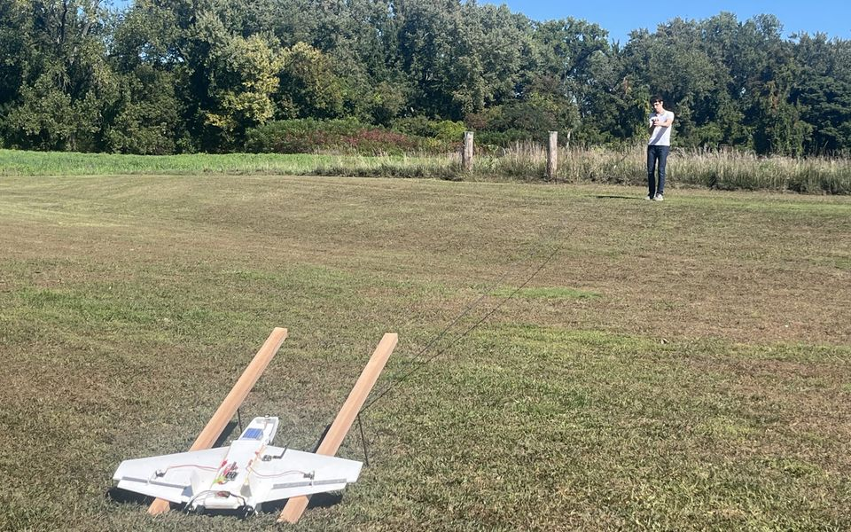
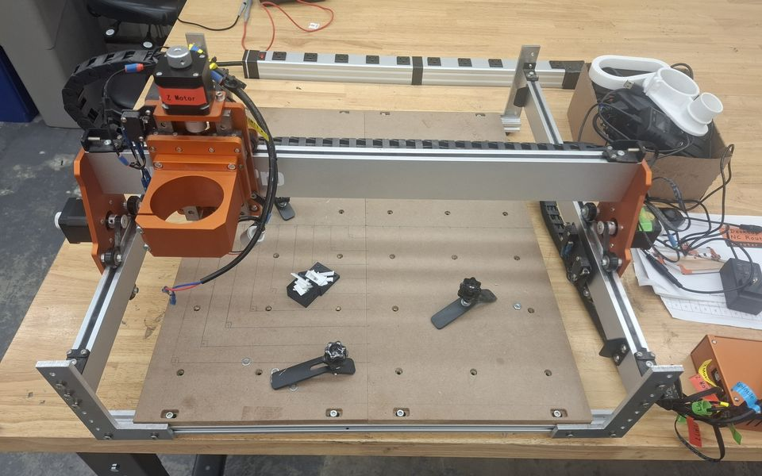
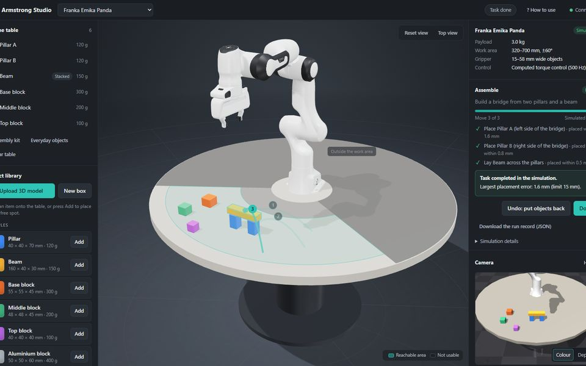
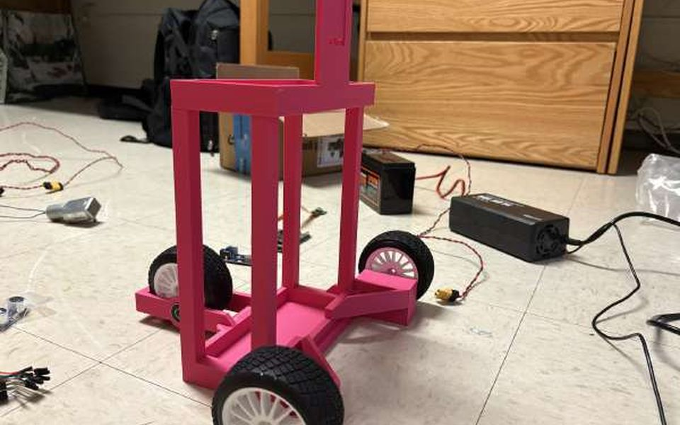
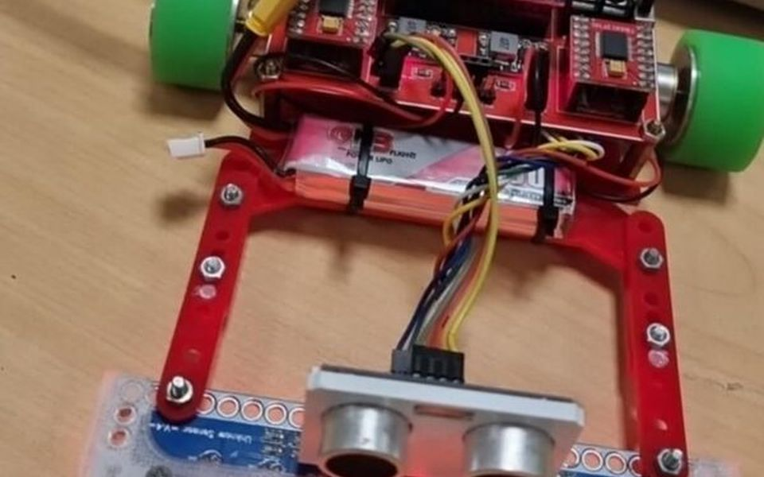
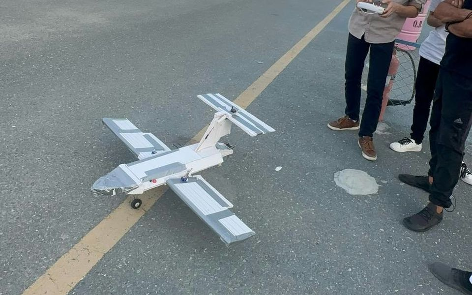
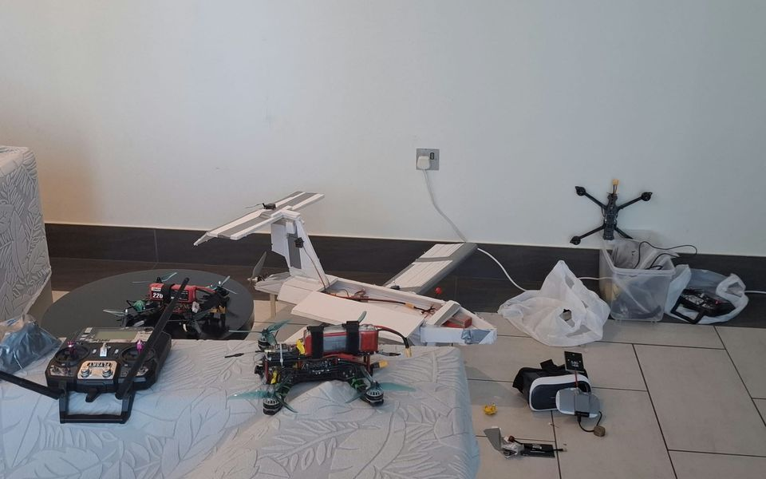

AWRAS
Rebuilding as 1.3
My 3D-printed flying-wing UAV. Tailless delta, about 850 mm span, LW-PLA with carbon spars. Designed, built in Qatar, launched off a catapult I built, crashed, and now rebuilt.
Onshape, XFOIL, INAV, LW-PLA, carbon fiber

CNC router
Modifying
For UMass Aeronautics
Getting the airframe team off hand-cut carbon fiber. I designed a 400 × 400 mm router from scratch, then bought a used Masuter Pro for half the BOM and documented why. Now raising its gantry with brackets I milled from aluminum.
Onshape, GRBL, plasma cutter, manual mill

Armstrong Studio
Hackathon
Hackachusetts, team project
A simulated Franka Panda arm that assembles, stacks and sorts parts in your browser, with MuJoCo physics and a simulated RGB-D camera that finds the parts. I built the backend. The follow-up adds STL import and saved workflows.
Python, MuJoCo, FastAPI, React, Three.js

PromptoPal
Assembling
With Abhinav Ram
An assistive robot that finds a person at scheduled times and prompts them to start daily tasks, built for people with disabilities. I designed the chassis and the power and motor-drive circuits, and did the wiring and fabrication.
Onshape, power electronics, soldering, 3D printing

Line tracking robot
1st place, twice
OBK Robotics
Won the 15th Arab Robotics Competition (out of 50 teams) and the 16th Qatar Schools Robotics Competition. I inherited the robot rather than designing it, then tuned its code, upgraded its motors, kept it running with repairs, and ran team logistics.
Arduino, C++, soldering

RC aircraft
6 airframes
Six foamboard planes I built before AWRAS, with no kits. Five crashed or never flew, and each failure became a rule for the next one, like checking thrust-to-weight first. Plane six took off, flew, and landed.
Foamboard, CAD-printed parts, flight testing

Drones
3 quads
A 5″ competition quad, a 7″ freestyle quad whose motors went into my flying wing after it crashed, and a high-speed build. This is where I learned to solder, set up Betaflight, and fly FPV.
Betaflight, FPV, soldering